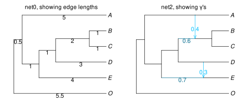

Pairwise and quartet data
We show here some functionalities to calculate dissimilarities or distances between taxa, either expected from a given network, or observed in data. To calculate expectations under a network, this network's edges need to have branch lengths and γ inheritance values.
We use 2 example networks in this section: net0 without reticulations (a tree) and net2 with 2 reticulations. net0 is in fact net2's major tree: obtained by deleting every minor hybrid edge.
net0 = readnewick("(O:5.5,((E:4.0,(D:3.0,(C:1.0,B:1.0):2.0):1.0):1.0,A:5.0):0.5);");
net2 = readnewick("(O:5.5,(((E:1.5)#H1:2.5::0.7,((#H1:0,D:1.5):1.5,
((C:1,B:1):1)#H2:1::0.6):1.0):1.0,(#H2:0,A:2):3):0.5);")
average pairwise distance
One distance between pairs of taxa, say between t1 and t2, is the average length of all "up-down" paths in the network to go from t1 to t2 (see Xu & Ané 2023 for example). In a tree, there is a single such path: going up from t1 to their most recent common ancestor, then down to t2. In a general network, there can be multiple paths. Each path has an inheritance weight: the product of the inheritance γ's of all edges in the path. Under a simple model, this is the proportion of genetic material that took this path. The average distance between t1 and t2 is the weighted average of these paths' lengths, weighted by the paths' inheritance.
It can be calculated with pairwisetaxondistancematrix. On our tree net0, we get this:
julia> aveD_net0 = pairwisetaxondistancematrix(net0)6×6 Matrix{Float64}: 0.0 11.0 11.0 11.0 11.0 11.0 11.0 0.0 8.0 8.0 8.0 10.0 11.0 8.0 0.0 6.0 6.0 10.0 11.0 8.0 6.0 0.0 2.0 10.0 11.0 8.0 6.0 2.0 0.0 10.0 11.0 10.0 10.0 10.0 10.0 0.0
The order of rows and columns in this matrix is the same as given by tiplabels. For example, we can convert the distance matrix aveD_net0 to a data frame with a column named for each taxon like this.
julia> taxonlist0 = tiplabels(net0)6-element Vector{String}: "O" "E" "D" "C" "B" "A"julia> using DataFramesjulia> DataFrame(aveD_net0, taxonlist0)6×6 DataFrame Row │ O E D C B A │ Float64 Float64 Float64 Float64 Float64 Float64 ─────┼────────────────────────────────────────────────────── 1 │ 0.0 11.0 11.0 11.0 11.0 11.0 2 │ 11.0 0.0 8.0 8.0 8.0 10.0 3 │ 11.0 8.0 0.0 6.0 6.0 10.0 4 │ 11.0 8.0 6.0 0.0 2.0 10.0 5 │ 11.0 8.0 6.0 2.0 0.0 10.0 6 │ 11.0 10.0 10.0 10.0 10.0 0.0
Using the network net2, we see that its reticulations bring E closer to D; and bring B & C closer to A (and away from D & E since A is distant from them):
julia> aveD_net2 = pairwisetaxondistancematrix(net2);julia> taxonlist2 = tiplabels(net2);julia> DataFrame(aveD_net2, taxonlist2)6×6 DataFrame Row │ O E D C B A │ Float64 Float64 Float64 Float64 Float64 Float64 ─────┼────────────────────────────────────────────────────── 1 │ 0.0 11.0 11.0 11.0 11.0 11.0 2 │ 11.0 0.0 6.5 8.44 8.44 10.0 3 │ 11.0 6.5 0.0 7.6 7.6 10.0 4 │ 11.0 8.44 7.6 0.0 2.0 7.6 5 │ 11.0 8.44 7.6 2.0 0.0 7.6 6 │ 11.0 10.0 10.0 7.6 7.6 0.0
hamming distance
To calculate pairwise distances observed in data, such as along a DNA alignment across multiple sites, we can use PhyloNetworks.hammingdistancematrix.
julia> dna_data = [ ['T','G','T','A','G'], # taxon 1 ['T','G','A','A','G'], ['T','G','A','A','C'], ['T','G','A',missing,missing], ['T','G','A','T','C'], # taxon 5 ];julia> d = PhyloNetworks.hammingdistancematrix(dna_data)5×5 Matrix{Float64}: 0.0 0.2 0.4 0.2 0.6 0.2 0.0 0.2 0.0 0.4 0.4 0.2 0.0 0.0 0.2 0.2 0.0 0.0 0.0 0.0 0.6 0.4 0.2 0.0 0.0
Perhaps we want to give weights to each trait, such as if an alignment is summarized by keeping each site pattern once, weighted by the number of sites having this pattern:
julia> site_count = [3,2,1,1,1]; # invariable site patterns have higher countsjulia> d = PhyloNetworks.hammingdistancematrix(dna_data, site_count)5×5 Matrix{Float64}: 0.0 0.125 0.25 0.125 0.375 0.125 0.0 0.125 0.0 0.25 0.25 0.125 0.0 0.0 0.125 0.125 0.0 0.0 0.0 0.0 0.375 0.25 0.125 0.0 0.0
A Jukes-Cantor correction can be applied with PhyloNetworks.distancecorrection_JC!:
julia> PhyloNetworks.distancecorrection_JC!(d, 4) # 4 states5×5 Matrix{Float64}: 0.0 0.136741 0.304099 0.136741 0.51986 0.136741 0.0 0.136741 0.0 0.304099 0.304099 0.136741 0.0 0.0 0.136741 0.136741 0.0 0.0 0.0 0.0 0.51986 0.304099 0.136741 0.0 0.0
expected f2-statistics
The f2-statistic gives another measure of dissimilarity between pairs of taxa. The expected value of f2 between taxa t₁ and t₂ is
\[f_2(t_1, t_2) = E[(X(t_1) - X(t_2))^2]\]
under a Brownian motion model for trait X evolving along the network, where X(t₁) and X(t₂) are the values of X for taxa t₁ and t₂.
In the network, branch lengths measures units of drifts when the data X are allele frequencies, and with a variance factor dependent on the allele frequency at the root. For background, see for example Patterson et al. 2012 or Lipson 2020.
If the network is a tree, then this is exactly the average distance (or simply, the length of the unique path) between t₁ and t₂.
It can be calculated with expectedf2matrix. On our tree net0, we get an f2 matrix equal to the average distance matrix:
julia> f2D_net0 = expectedf2matrix(net0)6×6 Matrix{Float64}: 0.0 11.0 11.0 11.0 11.0 11.0 11.0 0.0 8.0 8.0 8.0 10.0 11.0 8.0 0.0 6.0 6.0 10.0 11.0 8.0 6.0 0.0 2.0 10.0 11.0 8.0 6.0 2.0 0.0 10.0 11.0 10.0 10.0 10.0 10.0 0.0julia> f2D_net0 == aveD_net0true
Again, taxa are listed along rows and along columns in the same order as listed by tiplabels(). On our network net2, the f2 and average distances differ:
julia> f2D_net2 = expectedf2matrix(net2);julia> DataFrame(f2D_net2, taxonlist2)6×6 DataFrame Row │ O E D C B A │ Float64 Float64 Float64 Float64 Float64 Float64 ─────┼────────────────────────────────────────────────────── 1 │ 0.0 9.95 11.0 9.56 9.56 11.0 2 │ 9.95 0.0 5.45 5.95 5.95 8.95 3 │ 11.0 5.45 0.0 6.16 6.16 10.0 4 │ 9.56 5.95 6.16 0.0 2.0 6.16 5 │ 9.56 5.95 6.16 2.0 0.0 6.16 6 │ 11.0 8.95 10.0 6.16 6.16 0.0
In particular, we see that divergences between the outgroup O and tips B, C and E decrease because of the reticulations.
expected f4-statistics
The f4-statistic gives a measure of dissimilarity between quartets of taxa. The expected value of f4 between taxa t₁, t₂, t₃ and t₄ is
\[f_4(t_1, t_2; t_3, t_4) = E[(X(t_2) - X(t_1))(X(t_4) - X(t_3))]\]
under a Brownian motion model for trait X evolving along the network, where X(tᵢ) is the values of X for taxa tᵢ.
There are 4! = 24 f4 statistics relating 4 taxa, but all can be computed using only 2 of them, using the symmetries such as: $f_4(t_1, t_2; t_3, t_4) = - f_4(t_1, t_2; t_4, t_3)$; $f_4(t_1, t_2; t_3, t_4) = f_4(t_3, t_4; t_1, t_2)$ and
\[f_4(t_1, t_2; t_3, t_4) + f_4(t_1, t_3; t_4, t_2) + f_4(t_1, t_4; t_2, t_3) = 0.\]
The f4-statistics can be used to capture tree-likeness, as on a tree with no reticulation and quartet topology t₁t₂|t₃t₄, the 4-points condition writes:
\[f_4(t_1, t_2; t_3, t_4) = 0 \quad \text{and} \quad f_4(t_1, t_4; t_2, t_3) = - f_4(t_1, t_3; t_4, t_2) > 0.\]
For background, see again for example Patterson et al. 2012 or Lipson 2020.
The f4-statistics expected from a network can be calculated with expectedf4table.
julia> f4,t = expectedf4table(net0);Calculation of expected f4 for 15 4-taxon sets... 0+---------------+100% ***************julia> t # taxa, but ordered alphabetically: not as in tiplabels(net0)6-element Vector{String}: "A" "B" "C" "D" "E" "O"julia> first(f4,2) # first 2 4-taxon sets, each with 3 quartet f4s2-element Vector{PhyloNetworks.QuartetT{StaticArraysCore.MVector{3, Float64}}}: 4-taxon set number 1; taxon numbers: 1,2,3,4 data: [-2.0, 2.0, 0.0] 4-taxon set number 2; taxon numbers: 1,2,3,5 data: [-3.0, 3.0, 0.0]
The taxon numbers above are indices in the taxon list t. Here is a way to print all f4 statistics expected from our tree net0:
julia> for q in f4 println(join(t[q.taxonnumber],",") * ": " * string(round.(q.data, sigdigits=2))) endA,B,C,D: [-2.0, 2.0, 0.0] A,B,C,E: [-3.0, 3.0, 0.0] A,B,D,E: [-1.0, 1.0, 0.0] A,C,D,E: [-1.0, 1.0, 0.0] B,C,D,E: [0.0, -2.0, 2.0] A,B,C,O: [-4.0, 4.0, 0.0] A,B,D,O: [-2.0, 2.0, 0.0] A,C,D,O: [-2.0, 2.0, 0.0] B,C,D,O: [0.0, -2.0, 2.0] A,B,E,O: [-1.0, 1.0, 0.0] A,C,E,O: [-1.0, 1.0, 0.0] B,C,E,O: [0.0, -3.0, 3.0] A,D,E,O: [-1.0, 1.0, 0.0] B,D,E,O: [0.0, -1.0, 1.0] C,D,E,O: [0.0, -1.0, 1.0]
For each set of 4 taxa, the following f4 statistics are computed: f4(t1, t2; t3, t4), f4(t1, t3; t4, t2) and f4(t1, t4; t2, t3), so that they sum up to 0 as recalled above.
On a tree with a split t1,t2|t4,t5, the corresponding f4 value should be 0, and the other 2 should give ± the length of the internal path separating the 2 groups of 2 taxa. (Again, the branch lengths unit depends on the data being considered.)
Here for example, the first 4-taxon set is A,B,C,D. In our tree, BC is a clade, separated from AD by a branch of length 2. Accordingly, the third f4 value, corresponding to AD|BC, is 0; and the other two f4s are 2 or -2.
We can see how adding reticulations to our tree affects expected f4s. The columns names below indicate the specific order of taxa for each f4. This order matters for the sign.
julia> f4,t = expectedf4table(net2, showprogressbar=false); # same t: alphabeticallyjulia> nt = tablequartetf4(f4, t);julia> df = DataFrame(nt) # convert table to data frame15×8 DataFrame Row │ qind t1 t2 t3 t4 f4_12_34 f4_13_42 f4_14_23 │ Int64 String String String String Float64 Float64 Float64 ─────┼───────────────────────────────────────────────────────────────────── 1 │ 1 A B C D -0.16 0.16 0.0 2 │ 2 A B C E -0.58 0.58 0.0 3 │ 3 A B D E -0.42 -1.75 2.17 4 │ 4 A C D E -0.42 -1.75 2.17 5 │ 5 B C D E 0.0 -2.33 2.33 6 │ 6 A B C O -1.36 1.36 0.0 7 │ 7 A B D O -1.2 0.0 1.2 8 │ 8 A C D O -1.2 0.0 1.2 9 │ 9 B C D O 0.0 -1.36 1.36 10 │ 10 A B E O -0.78 -0.42 1.2 11 │ 11 A C E O -0.78 -0.42 1.2 12 │ 12 B C E O 0.0 -1.78 1.78 13 │ 13 A D E O -1.75 1.75 0.0 14 │ 14 B D E O -0.97 0.55 0.42 15 │ 15 C D E O -0.97 0.55 0.42
We still have f4=0 on the 3rd column for first taxon set A,B,C,D, because BC are still sister in the network. But the last taxon set for example, C,D,E,O, has no 0 values of f4 due to the reticulation between ancestors of D and E: in the subnetwork for C,D,E,O, there is a cycle of 4 edges.
expected f3-statistics
The f3-statistics can give a measure of similarity between pairs of taxa, relative to a given reference taxon tₒ. Using the same notations as above, the expected value of f3 between taxa t₁ and t₂ is:
\[f_3(t_o; t_1, t_2) = E[(X(t_o) - X(t_1))(X(t_o) - X(t_2))]\]
We may calculate f3 statistics expected from a network using PhyloNetworks.expectedf3matrix. Here we use the outgroup O as a reference taxon:
julia> f3_net2 = PhyloNetworks.expectedf3matrix(net2, "O");julia> DataFrame(f3_net2, taxonlist2)6×6 DataFrame Row │ O E D C B A │ Float64 Float64 Float64 Float64 Float64 Float64 ─────┼────────────────────────────────────────────────────── 1 │ 0.0 0.0 0.0 0.0 0.0 0.0 2 │ 0.0 0.0 7.75 6.78 6.78 6.0 3 │ 0.0 7.75 0.0 7.2 7.2 6.0 4 │ 0.0 6.78 7.2 0.0 8.56 7.2 5 │ 0.0 6.78 7.2 8.56 0.0 7.2 6 │ 0.0 6.0 6.0 7.2 7.2 0.0
quartet concordance factors
The concordance factor of a quartet ab|cd is the proportion of the genome whose genealogy has this unrooted topology.
Tools to calculate quartet concordance factors expected from a network under the coalescent model are provided in package QGoF: see its documentation about expected concordance factors.
To calculate quartet concordance factors observed in data, one option is to count the number of gene trees that display each quartet, using countquartetsintrees and tablequartetCF.
In the example below, the 4th gene tree is missing taxon A, and the 6th gene tree has a polytomies (unresolved ABE clade), such as if a branch of low support was collapsed. The number of genes underlying each quartet is captured in the table below.
julia> sixgenetrees_nwk = [ "(E,((A,B),(C,D)),O);","(((A,B),(C,D)),(E,O));","(A,B,((C,D),(E,O)));", "(B,((C,D),(E,O)));","((C,D),(A,(B,E)),O);","((C,D),(A,B,E),O);"];julia> genetrees = readnewick.(sixgenetrees_nwk);julia> q,t = countquartetsintrees(genetrees, showprogressbar=false);julia> df = tablequartetCF(q,t) |> DataFrame15×9 DataFrame Row │ qind t1 t2 t3 t4 CF12_34 CF13_24 CF14_23 ngenes │ Int64 String String String String Float64 Float64 Float64 Float64 ─────┼───────────────────────────────────────────────────────────────────────────── 1 │ 1 A B C D 1.0 0.0 0.0 5.0 2 │ 2 A B C E 0.75 0.25 0.0 4.0 3 │ 3 A B D E 0.75 0.25 0.0 4.0 4 │ 4 A C D E 0.0 0.0 1.0 5.0 5 │ 5 B C D E 0.0 0.0 1.0 6.0 6 │ 6 A B C O 1.0 0.0 0.0 5.0 7 │ 7 A B D O 1.0 0.0 0.0 5.0 8 │ 8 A C D O 0.0 0.0 1.0 5.0 9 │ 9 B C D O 0.0 0.0 1.0 6.0 10 │ 10 A B E O 0.75 0.0 0.25 4.0 11 │ 11 A C E O 0.6 0.4 0.0 5.0 12 │ 12 B C E O 0.666667 0.333333 0.0 6.0 13 │ 13 A D E O 0.6 0.4 0.0 5.0 14 │ 14 B D E O 0.666667 0.333333 0.0 6.0 15 │ 15 C D E O 1.0 0.0 0.0 6.0
If low-support branches are not collapsed, this counting method does not account for gene tree estimation error. (It biases concordance factors towards 1/3 for each resolution of a 4-taxon tree: lack of knowledge is mistaken as lack of concordance). Estimation error can be accounted for in a Bayesian framework: see PhyloUtilities for a pipeline.